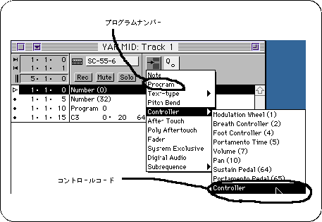
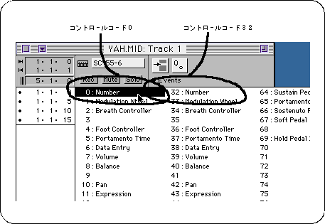
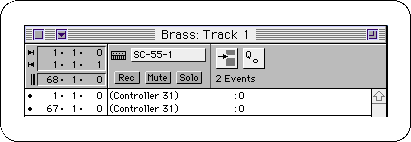
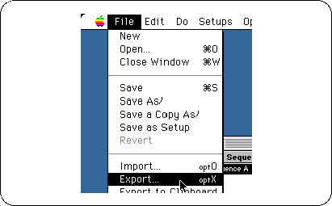
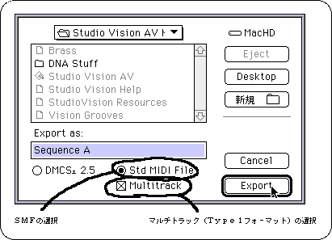

Return to previous page | Return to menu | Go to next page
What we have created so far is not only sound, but we have to make music using that sound.
However, Sega Sound Tool does not have software for creating sheet music and song data.
The software for creating music scores is mainly called sequence software. When a MIDI instrument (such as a keyboard) is played, it is recorded and the song data is saved.
Some have a function called notation software, which has a function to display a score and put a note like a word processor.
The sequence software can save song data in SMF (Standard MIDI Format) format.
To use it with Saturn, save the song data in this SMF type 1 format.
For details, refer to the manual of each software.
Also, before creating a song, there are notes about the song itself, so be sure to check the following points with the game programmer.
When using a long sound, if the long sound is pronounced before the fade out, the volume will not change during the sound, so only the long sound will not fade out. May remain.
When usingIf you change the tempo of a song while playing a song that contains loop information, the tempo will return to the default at the beginning of the loop.
Let's move on to song creation.
When creating songs (including sound effects), each instrument part is handled in units called tracks.
When creating an SMF file, information called MIDI events must be shifted by at least one clock in the following order on a track containing note information.
For Saturn, there is no problem whether you put it in or not, but the control numbers 32 to 63 to be used later are originally prepared to increase the accuracy from 0 to 31, It is better to put it.
The parameter is the tone bank number (0-15) used for this song (sound effect). The tone bank number is set when creating the sound simulator map (see “4) Creating a map” in section 2-6.
Enter the number (0 to 127) from the beginning of the tone bank set in 2) of the tone used in the track.
The example in VisionAV is listed below, but basically the same is true for other sequence software.

In the case of control codes, click the mouse on the position of the inserted control code and set 0 and 32 as shown below.

This software is “Number (0)”, but some Japanese software is “Control (0)”.
There is also software that does not have a pop-up menu, and moves the mouse to the position of () and clicks the number up or down.
In addition, it is possible to loop the song with BGM etc. by putting 0 of control code 31 at the beginning and end of the loop.
Loop information can be stored in a single track, so it will be easier to see later if you create a track that contains only loop information.
Here is an example:

The MIDI event insertion method is exactly the same as the control code insertion example.
Save is a multi-track SMF file. * First, select Export from the File menu.

Next, the following screen is displayed. Specify SMF and Type 1 format.
